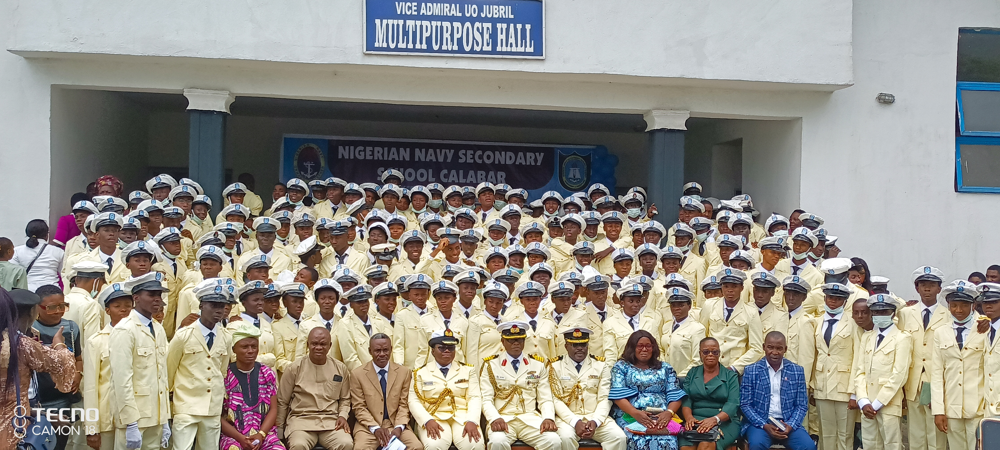
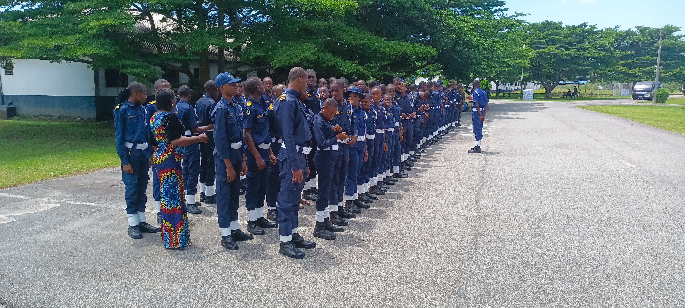

Discover our rich history, mission, and the values that make us a premier institution in Cross River State

Nigerian Navy Secondary School (NNSS) Calabar was established by the Nigerian Navy to provide quality secondary education to children of naval personnel and civilians in Calabar, Cross River State. The school has grown to become one of the most prestigious secondary schools in the region.
Our mission is to provide a nurturing environment that fosters academic excellence, moral integrity, and leadership qualities. We are committed to producing well-rounded individuals who will contribute positively to society.
Under the leadership of our Commandant, NNSS Calabar continues to uphold the highest standards of education while maintaining the discipline and values synonymous with the Nigerian Navy.
Excellence: We strive for the highest academic and moral standards in all that we do, never settling for less than the best.
Service: We are committed to serving our community and nation with dedication and integrity, inspired by our naval founding.
Discipline: Inspired by our naval heritage, we instill self-discipline and personal responsibility in every student from day one.
Unity: We embrace diversity and foster a strong sense of belonging among all members of our school community across all six arms.

A well-organized system that nurtures students from Junior to Senior Secondary
JSS 1, 2, and 3 — Students study English, Mathematics, Pre-Vocational Studies, National Values, Basic Science & Technology, Cultural & Creative Arts, History, and Cisco. Each class has 6 arms: AGU, AYAM, DAMISA, EKUN, EKPE, SIRI.
SS 1–3 Arms: AGU, AYAM, DAMISA (Science). Subjects include Mathematics, Physics, English, Chemistry, Further Mathematics, Biology, Computer Studies, Civic Education, Geography, Cisco, Technical Drawing, and more.
EKUN & EKPE Arms (Technical); SIRI Arm (Arts & Commercial). Subjects include CRS, Literature, Economics, Accounting, Commerce, Government, French, Igbo, Food & Nutrition, Electrical Installation, Visual Arts, and more.
Six proud arms competing for excellence in academics, sports, and character
Science Arm — SS1 to SS3
strength, courage and academic excellence
Science Arm — SS1 to SS3
resilience, power, and determination
Science Arm — SS1 to SS3
adaptiveness, agility, and sharp intellect
Technical Arm — SS1 to SS3
Precision, craftsmanship and technical skill
Technical Arm — SS1 to SS3
Innovation, dedication and practical excellence
Arts & Commercial — SS1 to SS3
Creativity, eloquence and cultural pride
Capt. M.N.Dalhatu
Office: +234-8055784354
Email: commandant@nnsscal.edu.ng
NNSS Calabar
Cross River State
Nigeria
Phone: +234-8055784354
Email: info@nnsscalabar.edu.ng
Web: nnsscalabar.edu.ng
Monday – Friday
8:00 AM – 4:00 PM
Saturday: 9:00 AM – 1:00 PM
Full boarding system
JSS 1–3 (Junior Secondary)
SS 1–3 (Senior Secondary)
6 Arms per Class Level
"Hardwork & Discipline"
The twin pillars on which every NNSS student builds their future